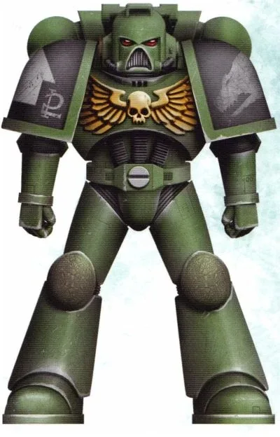
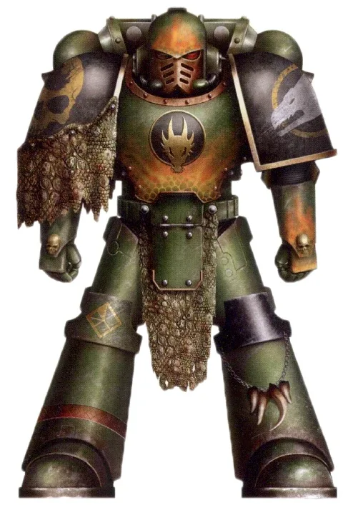
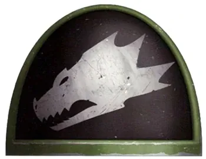
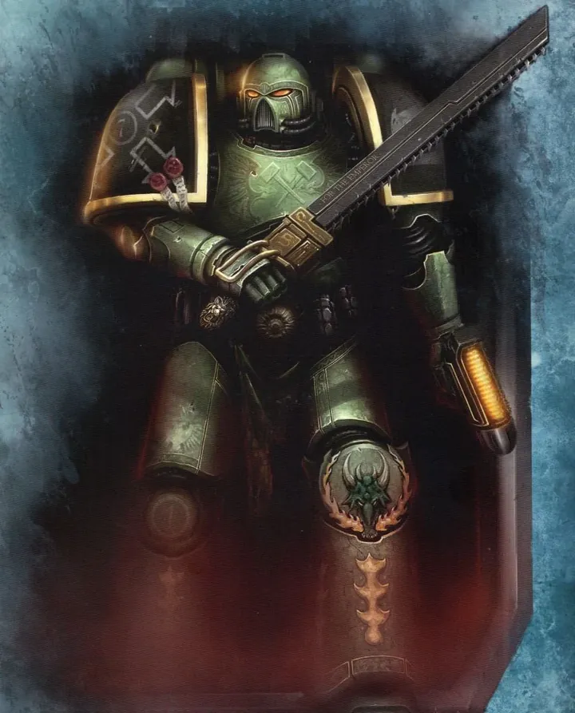
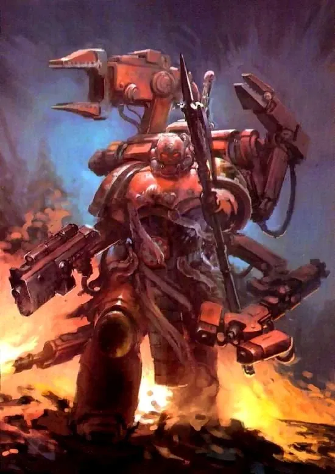
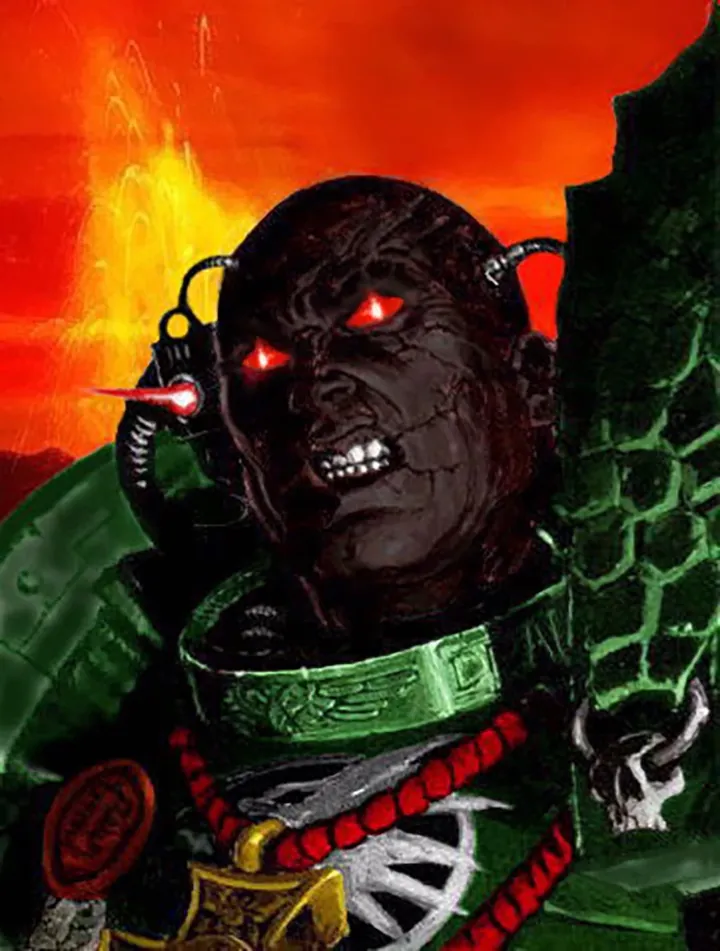
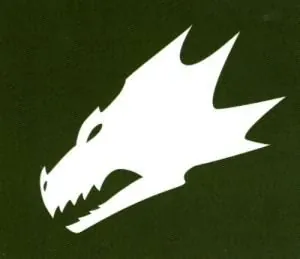
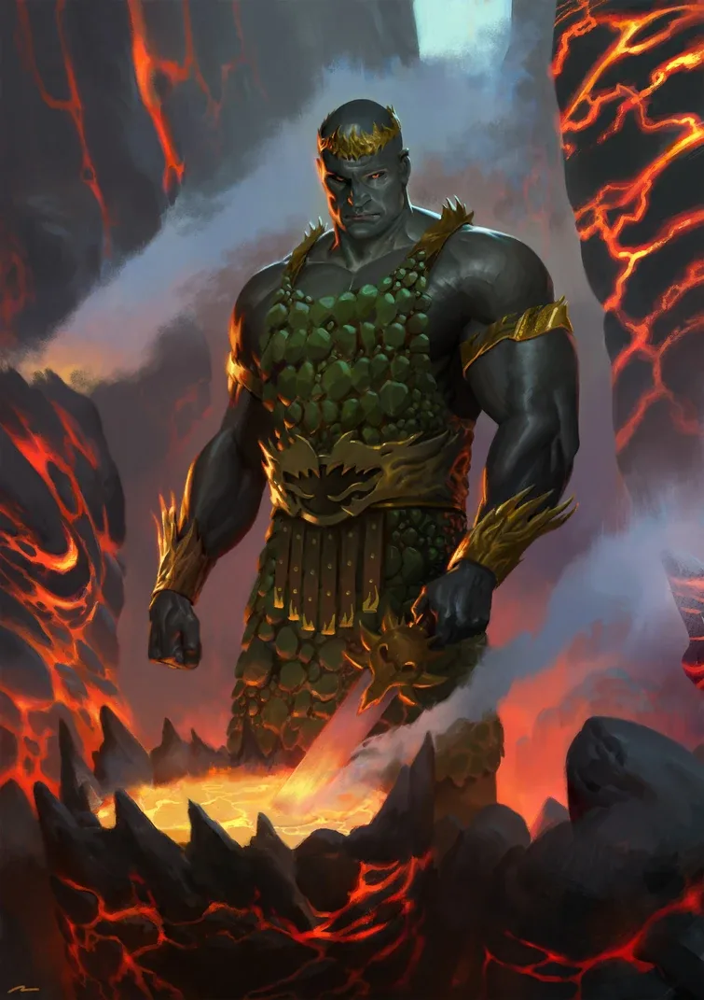
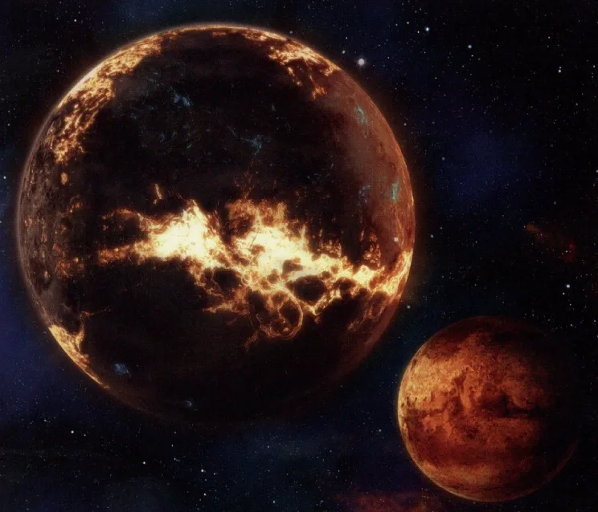

01ภาพรวม

ช่างตีเหล็กและนักรบใช้ไฟ ผู้ใส่ใจชีวิตพลเรือนมากที่สุดในบรรดา Space Marines
02ต้นกำเนิด
Legion ที่ 18 ภายใต้ Vulkan จากดาวภูเขาไฟ Nocturne ถูกกวาดล้างเกือบหมดที่ Isstvan V จึงเหลือเป็น Chapter เดียวที่มีทหารน้อยและรับสมาชิกช้า
03เนื้อเรื่องเจาะลึก
Nocturne ดาวแห่งไฟ
Vulkan เติบโตในหมู่บ้านช่างตีเหล็กบนดาวภูเขาไฟ Nocturne ที่ถูกโจรจากดาวบริวารปล้นเป็นประจำ เขานำชาวบ้านต่อสู้ และให้คุณค่ากับชีวิตคนธรรมดา — นิสัยที่สืบทอดมาถึง Chapter
Isstvan V
Salamanders เกือบถูกทำลายทั้ง Legion ในการสังหารหมู่ที่ Isstvan V ทำให้เป็น Chapter ขนาดเล็กที่ฟื้นตัวช้า และจนถึงยุคปัจจุบันก็ไม่เคยมี Successor Chapter จาก Second Founding ถูกบันทึกไว้
04ยุค 30K — ในยุค Great Crusade และ Horus Heresy

ยุค 30K เดิมชื่อ Dragon Warriors ภักดีสุดใจ และต้องเสีย Legion เกือบทั้งหมดที่ Isstvan V
ดูภาพรวมยุค 30K ทั้งหมดที่ เนื้อเรื่องยุค 30K และความต่างของสองยุคที่ เปรียบเทียบ 30K vs 40K
05นิสัยและวัฒนธรรม
- ผิวดำสนิทและตาสีแดงจากปฏิกิริยาระหว่างยีนกับรังสีของ Nocturne
- ใช้ชีวิตใกล้ชิดประชาชนบนดาวบ้านเกิด
- เชี่ยวชาญอาวุธไฟและการตีเหล็ก
06จุดที่น่าสนใจ
- ตามหาสมบัติ 9 ชิ้นของ Vulkan (พบแล้ว 5)
- Forgefather Vulkan He'stan เป็นผู้ครอบครองสมบัติ 3 ชิ้น
07ความสามารถพิเศษ
สิ่งที่ทำให้ Salamanders แตกต่างจากทัพอื่น — ทั้งพลังที่ติดตัวมาทั้งเผ่า/ทัพ และความสามารถของบุคคลสำคัญ
ของทั้งเผ่า/ทัพ

ผิวดำ ตาแดง
ปฏิกิริยาระหว่างอวัยวะ Melanochrome กับรังสีของดาว Nocturne ทำให้ผิวของ Salamanders ดำสนิทและดวงตาเรืองแสงสีแดง ดูน่ากลัว แต่พวกเขาเป็น Chapter ที่ใจดีที่สุด

ปกป้องพลเรือนก่อนเสมอ
ต่างจาก Chapter อื่นที่มองพลเรือนเป็นส่วนประกอบ Salamanders จะเสี่ยงชีวิตเพื่อช่วยคนธรรมดา และใช้ชีวิตใกล้ชิดกับชาวดาวบ้านเกิด

ช่างตีเหล็กแห่งไฟ
ทุกนายตีอาวุธของตัวเอง ชอบใช้อาวุธไฟและความร้อน (Flamer, Melta) ศาสนา Promethean Cult บูชาไฟ ความอดทน และการเสียสละ
ของบุคคลสำคัญ

Vulkan
Primarch ผู้ตายไม่ได้Vulkan เป็น "Perpetual" คือฟื้นคืนชีพได้หลังถูกฆ่า Konrad Curze ฆ่าเขาหลายครั้งแต่ไม่สำเร็จ ปัจจุบันไม่มีใครรู้ว่าอยู่ที่ใด

Vulkan He'stan
Forgefatherตามหาอาวุธ 9 ชิ้นที่ Vulkan ซ่อนไว้ทั่วกาแล็กซี ถือ Spear of Vulkan และสวม Gauntlet of the Forge ที่พ่นไฟได้

Adrax Agatone
Master of the ArsenalChapter Master ปัจจุบัน ผู้นำ Chapter ผ่านช่วงวิกฤติหลัง Great Rift
08หน่วยและบทบาทในกองทัพ
Salamanders มีทหารน้อยกว่า Chapter อื่น (7 กองร้อย กองละราว 100+ นาย) เพราะ Gene-seed ของพวกเขาสร้างทหารได้ช้า และให้ความสำคัญกับการปกป้องประชาชน

Forgefather
ฟอร์จฟาเธอร์ตำแหน่ง Chapter Master ที่เป็นช่างตีเหล็กชั้นเยี่ยมด้วย สืบทอดจาก Vulkan ผู้เป็นช่างฝีมือ (ปัจจุบันคือ Tu'Shan)
Firedrakes
ไฟร์เดรกทหารผ่านศึกกองร้อยที่ 1 สวมเกราะ Terminator ตกแต่งด้วยหนังสัตว์ Salamander ที่ล่ามาเอง
Master of the Forge
มาสเตอร์ออฟเดอะฟอร์จหัวหน้าช่างของ Chapter — Salamanders ทุกนายต้องตีอาวุธของตัวเอง เชื่อว่าอาวุธจากไฟและค้อนมีจิตวิญญาณ

Chaplain (Promethean Cult)
แชปเลนแห่งลัทธิโพรมีเธียนศาสนาประจำ Chapter บูชาไฟ ความอดทน และการเสียสละ ทหารถูกประทับตราด้วยเหล็กร้อนเพื่อบันทึกวีรกรรม
ตำแหน่งมาตรฐานของ Space Marine (Captain, Apothecary, Techmarine ฯลฯ) ดูได้ที่ หน่วยและบทบาทของ Space Marines และกฎการจัดองค์กรที่ Codex Astartes
09วีรกรรมและเหตุการณ์สำคัญ
สงคราม Armageddon ครั้งที่ 3
ร่วมรบกับ Black Templars ต้านทาน Ghazghkull
War Zone Armageddon
นำ 9 Chapter หยุดพิธีเรียก Angron กลับสู่ Armageddon
10ตัวละครสำคัญ

Vulkan
Primarch (สาบสูญ)Perpetual ผู้ฟื้นคืนชีพได้
11ยุค 40K — สหัสวรรษที่ 41
ยุค 40K Salamanders ปกป้องพลเรือนอย่างเต็มที่ แม้ต้องเสียสละกำลังพลที่มีน้อยอยู่แล้ว
12เนื้อเรื่องล่าสุด (Era Indomitus / M42)
รับภาระหนักในยุค Era Indomitus ทั้งที่รับสมาชิกได้ช้า และเป็นหนึ่งใน Chapter ใน Operation Imperator
หลังการเกิด Great Rift ปฏิทินของจักรวรรดิคลาดเคลื่อน เหตุการณ์ยุคปัจจุบันจึงมักระบุเพียง 'M42' ไม่มีปีที่แน่นอน
13แกลเลอรี
